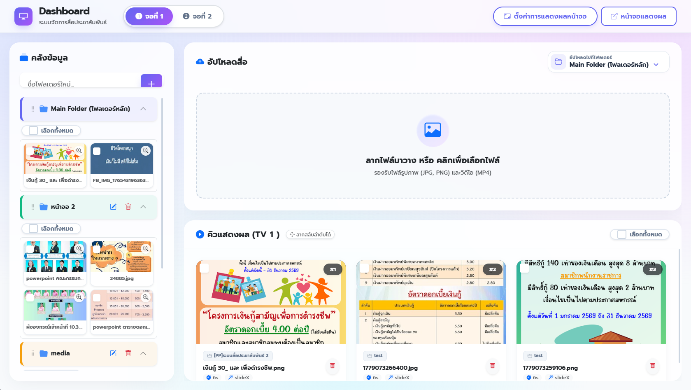
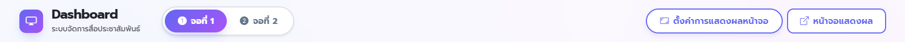
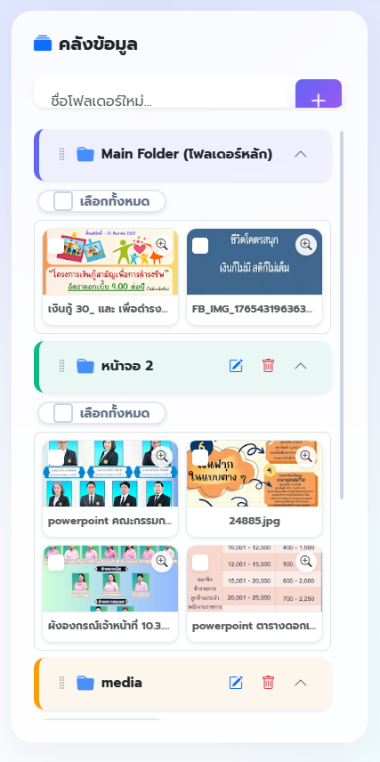
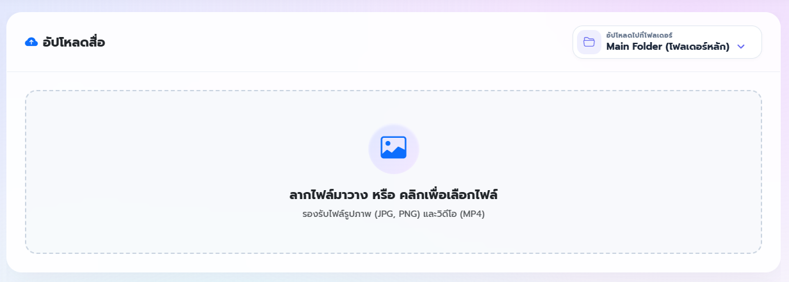
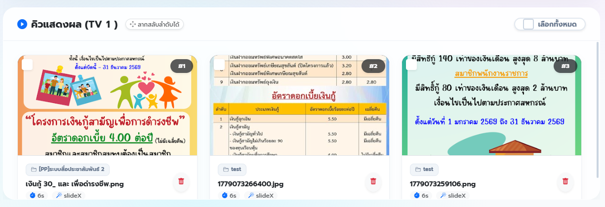
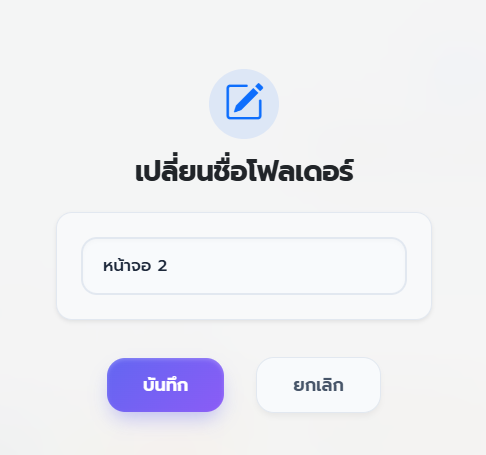
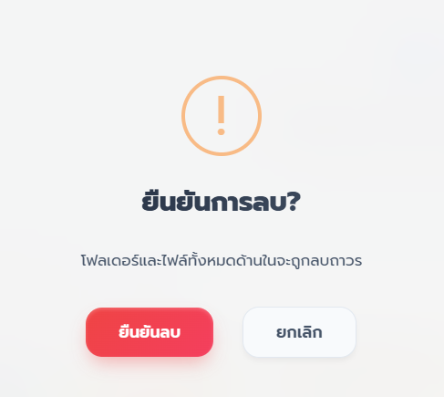
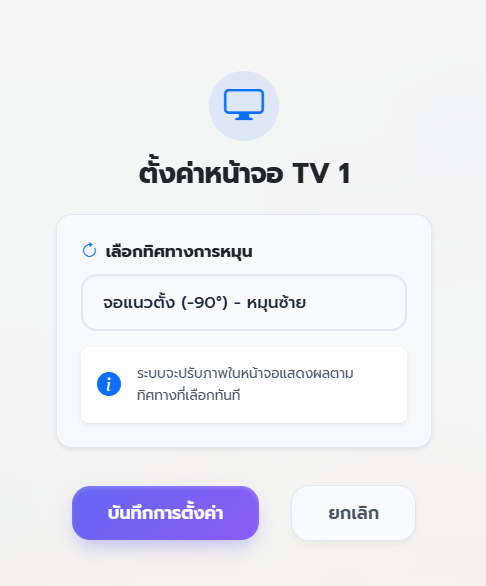

1. ภาพรวมของหน้าจอหลัก (Dashboard)
ระบบสำหรับจัดการและควบคุมสื่อประชาสัมพันธ์บนหน้าจอทีวีแบบรวมศูนย์ (Cloud-based) ที่ใช้งานง่ายและอัปเดตหน้าจอทันทีโดยไม่ต้องไปกดรีเฟรชที่ทีวี

หน้าจอหลักแบ่งพื้นที่การทำงานออกเป็น 4 ส่วนสำคัญ:
- แถบเมนูด้านบน (Top Menu): ใช้สลับเครื่องทีวี และตั้งค่าหน้าจอภาพรวม
- คลังข้อมูล (ด้านซ้าย): สร้างโฟลเดอร์ และจัดหมวดหมู่ไฟล์
- พื้นที่อัปโหลดสื่อ (ด้านขวาบน): จุดลากวางไฟล์เพื่อเพิ่มเข้าระบบ
- คิวแสดงผล (ด้านขวาล่าง): แผงจัดคิวสื่อที่จะปรากฏบนหน้าจอทีวีจริง
2. แถบเมนูควบคุม (Top Menu)

- 1 สลับหน้าจอ (จอที่ 1 / จอที่ 2): คลิกเพื่อเลือกสลับแผงควบคุม ว่าต้องการจะจัดการคิวสื่อของทีวีเครื่องไหน
- 2 ตั้งค่าการแสดงผลหน้าจอ: สำหรับปรับหมุนทิศทางของทีวี (แนวนอน/แนวตั้ง)
- 3 หน้าจอแสดงผล: คลิกเพื่อเปิดหน้าต่างใหม่สำหรับดูพรีวิวว่าหน้าจอทีวีตอนนี้แสดงผลรูปอะไรอยู่
3. การจัดการคลังข้อมูล (Library)
- สร้างโฟลเดอร์ใหม่: พิมพ์ชื่อที่ต้องการในช่อง "ชื่อโฟลเดอร์ใหม่..." แล้วกด ปุ่ม + (สีม่วง)
- การจัดการโฟลเดอร์: โฟลเดอร์จะถูกแยกสีให้อัตโนมัติเพื่อให้ดูง่าย คุณสามารถคลิกที่ชื่อโฟลเดอร์เพื่อเปิดดูภาพด้านใน
- แก้ไข / ลบ: กดไอคอน รูปดินสอ เพื่อแก้ไขชื่อ หรือกด ถังขยะ เพื่อลบโฟลเดอร์
- การย้ายไฟล์รวดเร็ว: คุณสามารถคลิกค้างที่รูปภาพ แล้ว ลากไปปล่อย (Drag & Drop) ที่หน้าโฟลเดอร์ปลายทางได้ทันที

4. การอัปโหลดรูปภาพและวิดีโอ (Upload Zone)

- วิธีการอัปโหลด: นำไฟล์รูปภาพ (JPG, PNG) หรือวิดีโอ (MP4) ลากจากในคอมพิวเตอร์มาวางในกรอบ หรือคลิกที่กรอบเพื่อเลือกไฟล์จากในเครื่อง
- เช็คปลายทาง: สังเกตที่มุมขวาบน จะมีบอกว่าไฟล์ที่คุณกำลังจะอัปโหลด จะถูกนำไปเก็บไว้ที่โฟลเดอร์ไหน
5. การจัดการคิวแสดงผล (Queue)
เมื่อกดเพิ่มสื่อจากคลังข้อมูล ภาพจะมาปรากฏในส่วนนี้ ซึ่งเป็นตัวกำหนดว่าจะแสดงอะไรบนจอทีวีบ้าง

- การสลับลำดับ: คลิกค้างที่รูปภาพแล้วลากสลับตำแหน่งไปมาได้เลย (ป้าย #1, #2 จะเป็นตัวบอกลำดับ)
- รายละเอียดสื่อ: ใต้รูปภาพแต่ละใบจะบอกว่ามาจากโฟลเดอร์ใด มีระยะเวลาแสดงผลกี่วินาที (เช่น 6s) และใช้เอฟเฟกต์การสลับภาพแบบไหน
- การนำออกจากจอ: กดปุ่ม ถังขยะสีแดง มุมขวาล่างของรูป ภาพจะหายไปจากจอทีวี (แต่ตัวไฟล์ต้นฉบับจะยังคงอยู่ในคลังข้อมูล)
💡 Tip (การตั้งค่าแบบกลุ่ม): คุณสามารถติ๊กเครื่องหมายถูก (✔) ที่มุมซ้ายบนของรูปภาพหลายๆ ใบ แล้วกดปุ่ม "ตั้งค่ากลุ่ม" เพื่อเปลี่ยนเวลาแสดงผลหรือเปลี่ยนเอฟเฟกต์พร้อมกันในครั้งเดียวได้
6. หน้าต่างเครื่องมือเพิ่มเติม (Pop-up)

เปลี่ยนชื่อโฟลเดอร์
เมื่อกดรูปดินสอ จะปรากฏหน้าต่างนี้ให้พิมพ์ชื่อใหม่ ระบบจะอัปเดตชื่อนี้ไปยังรูปในคิวทีวีให้อัตโนมัติ

ยืนยันการลบ
ระบบจะมีหน้าต่างเตือนสีแดงให้ยืนยันก่อนเสมอ เพื่อป้องกันการเผลอลบข้อมูลสำคัญทิ้ง

ตั้งค่าทิศทางหน้าจอ
ใช้หมุนจอ (แนวตั้ง/แนวนอน) เพียงกดเลือกองศาที่ต้องการ ภาพบนทีวีจะพลิกทิศทางตามทันที